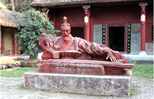

襄陽X發現三國起源
古隆中三顧茅廬
三國時代傑出的政治家、軍事家、思想家諸葛亮青年時代躬耕隱居之地。歷史上著名的劉備「三顧茅廬」和興漢藍圖「隆中對策」的史實就發生於此地。周遭景點還有紀念諸葛亮的三顧堂、武侯祠、抱膝亭及諸葛夫人的故里─黃家灣。
水鏡庄三國起源
是諸葛亮老師─司馬徽隱居地，被譽為「三國源頭」。司馬徽就是在這裡向劉備推薦了諸葛亮，由此引出了「三顧茅廬」、「隆中對」等故事。周遭景點還有傳說中關羽夜讀《春秋》的春秋寨、諸葛亮好友─徐庶的故里。

春秋寨關公夜讀
因關羽在此寨讀《春秋》而得名。山寨地形獨特，三面臨水，山水交融，視野開闊，有“一夫當關，萬夫莫敵之地利”，堪稱「中國的馬丘比丘」，華夏「中長城」，為中國「百大新發現」之一。